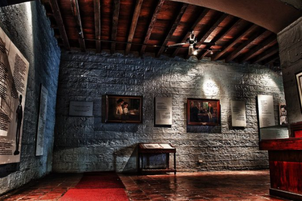

Rizal Shrine
Just a hundred meters away from Calamba’s town plaza, you can find the Museo ni Jose Rizal, also known as the Rizal Shrine in Calamba. This 2-story stone house is the replica of the birthplace of the Philippine national hero Jose Rizal. Its structure is made of hardwood, bricks, and sliding windows with capiz shells. It is one of the must-visit historical tourist spots in the Philippines.
The wealth of Rizal’s family can be traced back to their principalian roots, a Filipino class rewarded with either a gobernadorcillo or Cabeza de barangay position. Both of his paternal and maternal grandparents came from an affluent families. Their wealthy lineage was passed down to Rizal’s family, one of the distinguished families in Laguna.
The house is intended to provide an accurate representation of the home Rizal grew up in until his formal schooling in Biñan (where Rizal was born.) Rizal's anecdotes often reference his childhood home, recounting the nipa hut in the garden where he learned to sleep and sculpt; the kitchen where he learned the alphabet; the bedroom where he learned to pray; the library where he discovered books and the azotea where he listened to his grandmother's stories of "skeletons, buried treasures and trees that bloomed with diamonds. Near Rizal's home is the church where he was baptised. Saint John the Baptist Church.
Features
The Rizal Shrine is a typical rectangular Bahay na Bato, reminiscent of upper-class Filipino homes built during the Spanish Colonial era. The lower portion is made of adobe stone and brick, while the upper portion consists of hardwood The original interior flooring of the house was discovered during reconstruction and utilized It has sliding windows made of capiz shells the exterior walls are painted green (originally white) and the roof is constructed of red ceramic tile. In June 2009, the National Historical Institute (now National Historical Commission of the Philippines) ordered the shrine's repainting to highlight the meaning of Rizal's surname.
The ground floor of the house historically served as a stable for horses and carriages. It contains several exhibits on Rizal's childhood, including exact copies of Rizal's writings, drawings and original baptismal certificate. The upper floor served as the family's living quarters and consisted of: the living room, dining area, bathroom and library. Containing more than 1000 books, a caida serves as Francisco Mercado's library, the largest private library in Calamba at that time. Adjacent to the library is the family's formal dining room, where Rizal's parents hosted guests and other prominent members of the society] The caida is connected to a sala, which leads to three bedrooms: the boys' room (for Jose and Paciano), the girls' room for his 9 sisters and the master bedroom. The biggest among all the rooms, the master bedroom contains the four-poster bed where Rizal was born. Going beyond the sala is an informal dining room or comedor. Prominent in this room is the punkah, a large rectangular Indian fan. Next to the comedor and the azotea is an old well, one of the only surviving features of the original house
Rizal's house before it was paited green
Interior of the house
Statue of Rizal when he was a child
Built in 1997, a gallery, library, audio-visual room, and shop of Rizal memorabilia reside adjacent to the shrine The shrine has a large lawn with a replica of the nipa hut and a statue depicting young Rizal with his dog. The statue was constructed in 1996 by Dudley Diaz for the centennial celebration commemorating Rizal's death. The remains of Rizal's parents, Francisco Rizal Mercado and Teodora Alonso Realonda, are also located in the shrine.
The current house that you’ll see standing in Calamba is actually not the original house. The original establishment was sold and destroyed during World War II and was reconstructed in 1949 using the materials from the old building and at the same site. It was in 1950 that the reconstruction was finished.
Inside the Jose Rizal Shrine
The house is a bahay na Bato, a typical house of middle-class families during the Spanish colonial period. Outside, the house is repainted with a striking green shade which makes it easily recognizable. The green shade apparently symbolizes the surname of Jose Rizal. Going inside, you’ll find a traditional design, with narra flooring, capiz shell windows, and a red ceramic roof. You’ll see the servant’s room, workroom, and food supplies room on the ground floor. It contains memorabilia of Jose Rizal’s life, from his childhood days up to adulthood. Originally, the ground floor of the house was built as a horse stable. Currently, it houses Rizal’s writings, certificates, and more.
The second floor is historically where the family’s rooms, library, dining area, and bathrooms are. Their backyard was previously filled with different kinds of plants and fruits such as atis, santol, makopa, plum, and kasoy. There was also a small nipa hut which was said to be the national hero’s hideout in his younger years. In 1890, the family was evicted from their own home due to an altercation with friars. It was then that the demolition started. Thankfully, through the donations of schoolchildren, National Artist Juan F. Nakpil reconstructed the house in 1950.
Galleries
The establishment also serves as a museum that shows six galleries that’ll tell you more about the interesting life of Rizal.
The Kaliwanagan gallery shows the family life of Rizal in Calamba. Kapaligiran gallery depicts the town of Calamba as an agricultural town, highlighting the birthplace where our hero once lived. In the Karunungan gallery, you’ll learn about Jose Rizal’s education from his education at the Ateneo Municipal de Manila and Universidad de Santo Tomas.
The fourth gallery, the Bahay-na-Bato, would be perfect for those who would like to know more about Rizal’s house and the things that make their house a home. Another gallery, called the Unang Paglalakbay sa Europa, exhibits the life of Rizal in Europe, which shows his studies and writings on his novel Noli Me Tangere. The last gallery, the Pangalawang Paglalakbay sa Europa, highlights Rizal’s second journey to Europe, which tells about the propaganda and his second novel El Filibusterismo.
You’ll find other interesting memorabilia and activities in the museum, from holograms to interactive booths, to e-learning. This museum will surely entice you to learn and know more about Jose Rizal in a fun and interesting way.